Chapter 2: Alphabet aur accents¶
L’alphabet et les accents
French me wahi 26 letters hain jo English me hain, lekin zyada-tar letters ke naam alag hain — aur upar se chhote nishaan judte hain jinhe accents kehte hain. Accent sajaawat nahi hai: wo sound badal sakta hai (e vs é) ya matlab (ou “ya” vs où “kahan”). Is chapter me tum letters bolna, apna naam zor se spell karna, aur har accent padhna seekhoge.
- 126 letters aur unke naam
- 2Wo letters jo English bolne walon ko uljhate hain
- 3Words ko zor se spell karna
- 4Accents ek nazar me
- 5é, è, ê — teen e, do sounds
- 6Wo accents jo matlab badalte hain
- 7ç, tréma, aur œ
- 8Letter teams: ek jhalak
masculinefeminine
Accents spelling ka hissa hain
Jis word ka accent likha nahi, wo galat spelled hai. été ko “é-t-é” seekho, kabhi “ete” nahi.
2.1 26 letters aur unke naam¶
Words zor se spell karne ke liye letter names chahiye — apna naam, email, kisi sadak ka naam. Har naam suno aur doharao. Vowels saaf aur chhote hote hain.
| Letter | French naam | Awaaz |
|---|---|---|
| A a | a | [ah] |
| B b | bé | [bay] |
| C c | cé | [say] |
| D d | dé | [day] |
| E e | e | [uh] |
| F f | effe | [ehf] |
| G g | gé | [zhay] |
| H h | ache | [ash] |
| I i | i | [ee] |
| J j | ji | [zhee] |
| K k | ka | [kah] |
| L l | elle | [ehl] |
| M m | emme | [ehm] |
| N n | enne | [ehn] |
| O o | o | [oh] |
| P p | pé | [pay] |
| Q q | qu | [kew] |
| R r | erre | [ehr] |
| S s | esse | [ehss] |
| T t | té | [tay] |
| U u | u | [ew] |
| V v | vé | [vay] |
| W w | double vé | [doo-bluh-VAY] |
| X x | ixe | [eeks] |
| Y y | i grec | [ee-GREK] |
| Z z | zède | [zehd] |
- A, B, C, D, E, F, G — Pehle saat letters ek saans me.
- W, X, Y, Z — Aakhri chaar: double vé, ixe, i grec, zède.
2.2 Wo letters jo English bolne walon ko uljhate hain¶
Zyada-tar letter names aasaan hain. Kuch khatarnaak hain kyunki wo kisi doosre English letter jaise sunai dete hain. Phone par email spell karte waqt log inhi me galti karte hain.

Ulte-pulte jode
G = gé [zhay], J = ji [zhee] — English ka ulta. Aur E = [uh], I = [ee]: French I English E jaisa sunai deta hai.
Dhyan do
- Galat: Gita ko “jee, eye, tee, ay” spell karna.
- Sahi: G-I-T-A = gé, i, té, a [zhay, ee, tay, ah].
- Kyun: English letter names French sunne walon ko confuse karte hain: tumhara “eye” unke liye kuch nahi hai, aur tumhara “jee” unhe letter J (ji) jaisa lagta hai.
Dhyan do
- Galat: H ke liye “aitch” ya “haitch” bolna.
- Sahi: H = ache [ash].
- Kyun: Aur French words me ye letter kabhi bola hi nahi jaata: hôtel = [o-TEL].
Dhyan do
- Galat: Y ke liye “why” bolna.
- Sahi: Y = i grec [ee-GREK], “the Greek i”.
- Kyun: Words ke andar y aam taur par [ee] jaisa lagta hai: un stylo [stee-LO].
- G, J — gé, ji — Ulte jode ko paanch baar bolo.
- E, I — e, i — E hai [uh], I hai [ee].
2.3 Words ko zor se spell karna¶
Spell karna matlab épeler [ay-puh-LAY]. Ye wo phrases hain jo tum hotel desk par, phone par, ya jab koi tumhara naam likhta hai tab sunoge.
- Comment ça s’écrit ? — Ye kaise spell hota hai? (shabdik arth: ye kaise likha jaata hai?) [ko-mã sa say-KREE]
- Vous pouvez épeler, s’il vous plaît ? — Kya aap spell kar sakte hain, please? [voo poo-vay ay-puh-LAY seel voo PLEH]
- Mon prénom, c’est Priya. Ça s’écrit P, R, I, Y, A. — Mera first name Priya hai. Ye P-R-I-Y-A spell hota hai.
- Mon nom de famille, c’est Sharma : S, H, A, R, M, A. — Mera surname Sharma hai: S-H-A-R-M-A.
- Ça s’écrit avec deux L. — Ye do L ke saath spell hota hai (double letters: deux L, “do L”).
Spell karne ke words¶
| Tum bolte ho | Matlab |
|---|---|
| e accent aigu | é |
| e accent grave | è |
| e accent circonflexe | ê |
| c cédille | ç |
| i tréma | ï |
| majuscule / minuscule | bada letter / chhota letter |
| arobase | @ |
| point | . (dot, bindu) |
| tiret / tiret bas | - (hyphen) / _ (underscore) |
- priya.sharma@gmail.com — aise bola jaata hai: “priya point sharma arobase gmail point com”
- Élodie : E accent aigu, L, O, D, I, E. — Accent wale French naam ko spell karna.
2.4 Accents ek nazar me¶
French me paanch nishaan hain. Sirf e teeno “chhat” wale accents le sakta hai; cedilla sirf c ke neeche aata hai.

| Nishaan | Letters | Mukhya kaam |
|---|---|---|
| accent aigu ´ | é | Sound: closed [ay] |
| accent grave ` | è, à, ù | è par sound: open [eh]. à, ù par: sirf matlab |
| accent circonflexe ^ | â, ê, î, ô, û | Itihaas (gaya hua s); ê = [eh], ô = closed [oh] |
| tréma ¨ | ë, ï, ü (kuch naamon me ÿ) | Is vowel ko alag bolo |
| cédille ¸ | ç | a, o, u se pehle c ka sound [s] hota hai |
2.5 é, è, ê — teen e, do sounds¶
Seedha e aam taur par halka [uh] hota hai ya silent. Accents uska sound theek karte hain. é ke liye halka sa muskuraao; è aur ê ke liye munh thoda aur kholo.
- l’été, le café, le bébé — garmi, coffee, baby — é = [ay], chhota aur saaf, “y” ki phisalan nahi [lay-TAY, ka-FAY, bay-BAY]
- la mère, le père, très — maa, pita, bahut — è = [eh], “bed” ke “e” jaisa [MEHR, PEHR, TREH]
- la fête, la tête, être — party, sir, hona — ê bhi [eh] hai [FET, TET, ETR]
- un élève — ek vidyarthi — ek hi word me dono sound: pehle é phir è [ɛ̃-nay-LEV]
é vs è/ê
é = [ay] (closed, muskurata hua) · è = ê = [eh] (open, “bed” jaisa). Bina accent ka e aam taur par [uh] hota hai ya silent.
Circumflex: gaya hua s¶
Kai sadiyon pehle bahut-se French words me vowel ke baad ek s hota tha. S gayab ho gaya, aur circumflex ne uski jagah le li. English ne aksar s rakh liya — isliye circumflex ek free vocabulary key hai.
| French | English cousin |
|---|---|
| la forêt | forest |
| l’hôpital | hospital |
| la fête | feast (festival) |
| l’île | isle (island) |
| le château | castle |
| la bête | beast |
| le coût | cost |
î aur û par circumflex sound me kuch nahi badalta. ô par ye closed [oh] deta hai: l’hôtel [lo-TEL]. â par kuch log gehra “ah” bolte hain (pâte, pasta), lekin aaj zyada-tar log use normal a ki tarah bolte hain.
2.6 Wo accents jo matlab badalte hain¶
Kuch accents sound me kuch nahi badalte — wo likhne me do words ka fark batate hain. Inhe likhna zaroori hai, nahi to tumhare sentence ka matlab badal jaata hai.
| Bina accent | Accent ke saath | Example |
|---|---|---|
| a = hai (has) | à = ko, par (to, at) | Il a un billet pour aller à Paris. |
| ou = ya (or) | où = kahan (where) | Où est le thé ou le café ? |
| la = the (f) | là = wahan (there) | La clé est là. |
| sur = upar (on) | sûr = pakka (sure) | Tu es sûr ? C’est sur la table. |
| du = kuch (m) | dû = karna pada (had to) | Il a dû acheter du pain. |
| des = kuch (pl) | dès = se (time) | Dès demain, je vois des amis. |
| mur = deewar (wall) | mûr = pakka hua (ripe) | Un fruit mûr près du mur. |
- Il a un billet pour aller à Paris. — Uske paas Paris jaane ka ticket hai. — a aur à ka sound same hai
- Où est le thé ou le café ? — Chai ya coffee kahan hai? — ou aur où ka sound same hai [oo]
- La clé est là. — Chaabi wahan hai.
- Tu es sûr ? C’est sur la table. — Kya tumhe pakka pata hai? Ye table par hai.
Jab accent sound aur matlab dono badal deta hai¶
- je parle / j’ai parlé — Main bolta/bolti hoon / Maine bola — é ise past bana deta hai [PARL / zhay par-LAY]
- jeune / le jeûne — jawaan / upvaas (jaise vrat) — open vs closed eu [ZHÖN / luh ZHÖN]
Accent ki aam galtiyan
- Galat: Je vais a Delhi.
- Sahi: Je vais à Delhi.
-
Kyun: “ko/tak” = grave accent wala à. Seedha a verb “hai/has” hota hai.
-
Galat: Ou habites-tu ?
- Sahi: Où habites-tu ?
-
Kyun: Sawaal wala word “kahan” hamesha accent ke saath aata hai: où.
-
Galat: Il fait chaud en ete.
- Sahi: Il fait chaud en été.
-
Kyun: Accents ke bina word padha nahi jaata: ete ko [et] bola jaayega.
-
Galat: ECOLE (sign par, accents hata diye gaye)
- Sahi: ÉCOLE
- Kyun: Careful French me capital letters bhi apne accents rakhte hain: À bientôt, État, Ça va.
2.7 ç, tréma, aur œ¶
Hard aur soft c aur g¶
Letters c aur g agle vowel ke hisaab se sound badalte hain — bilkul English ke cat / city, gate / gem ki tarah. Cedilla aur ek silent e ya u French ko wahi sound chunne dete hain jo use chahiye.
| Spelling | Sound | Examples |
|---|---|---|
| c + a, o, u | [k] | le café, la côte, la culture |
| c + e, i, y | [s] | le centre, la ville de Nice, le cycle |
| ç + a, o, u | [s] | ça, le garçon, j’ai reçu |
| g + a, o, u | [g] | la gare, le goût, aigu |
| g + e, i, y | [zh] | le genou, la girafe, la gym |
| ge + a, o | [zh] | nous mangeons, Georges |
| gu + e, i | [g] | la guerre, la guitare |
- Ça va ? Le garçon est français. — Kaise ho? Ladka French hai. [sa VA … luh gar-SÕ eh frã-SEH]
- Nous commençons, nous mangeons. — Hum shuru karte hain, hum khaate hain. — o se pehle bhi ç aur ge soft sound rakhte hain [noo ko-mã-SÕ, noo mã-ZHÕ]
- la guitare, la guerre, la girafe — guitar, jung, giraffe — gu = hard g, gi = soft zh [gee-TAR, GEHR, zhee-RAF]
Dhyan do
- Galat: le garcon [gar-KÕ]
- Sahi: le garçon [gar-SÕ]
- Kyun: o se pehle seedha c [k] hota hai. Cedilla hi use [s] banata hai.
Tréma: vowels ko alag bolo¶
Do vowels saath ho to aam taur par ek sound banate hain (ai = [eh], oi = [wa]). Tréma (do bindiyan) kehta hai: ruko — is vowel ko akele bolo.
- mais / le maïs — lekin / makka (corn) [MEH / ma-EESS]
- Noël, naïf, égoïste — Christmas, bholaa (naive), swaarthi [no-EL, na-EEF, ay-go-EEST]
ü par tréma kam hi dikhta hai. Ye aigüe me milta hai (aiguë ki 1990 wali spelling, “tez”, feminine).
Jude hue letters œ aur æ¶
œ (naam e dans l’o, “o ke andar e”) aam hai aur eu ke [ö] jaisa bolta hai. æ bahut kam milta hai.
- le cœur, la sœur, un œuf — dil, behen, ek ande [KÖR, SÖR, ɛ̃-NÖF]
- une œuvre d’art, le bœuf — kala ka namoona, beef [ew-NÖVR DAR, luh BÖF]
- Ils sont ex æquo. — Wo barabar hain (score same). — æ, Latin se [eel sõ eg-zay-KO]
Accents type karna
Phone par letter ko dabaye rakho (e → é è ê ë). Windows par US-International keyboard add karo: é ke liye ' phir e type karo, è ke liye ` + e, ê ke liye ^ + e, ç ke liye ' + c.
2.8 Letter teams: ek jhalak¶
French me ek sound ke liye aksar do ya teen letters aate hain. Unhe ek block ki tarah dekhna seekho. Har ek ki detail me practice The sounds of French me hai.
| Letters | Sound | Example |
|---|---|---|
| ou | [oo] | vous (aap) |
| oi | [wa] | moi (mujhe) |
| au, eau | [oh] | beau, l’eau (sundar, paani) |
| ai, ei | [eh] | le lait, la neige (doodh, barf) |
| eu, œu | [ö] | deux, la sœur (do, behen) |
| an, en | [ã] | l’enfant (bachcha) |
| on | [õ] | bonbon (mithai/toffee) |
| in, ain, un | [ɛ̃] | le vin, le pain, un |
| ch | [sh] | le chat (billi) |
| gn | [ny] | la montagne (pahaad) |
| qu | [k] | qui, quatre (kaun, chaar) |
| ill | [y] | la fille, la famille |
| ph, th | [f], [t] | la photo, le thé |
Do aam apvaad
ill = [eel] in ville (shehar), mille (hazaar) aur tranquille (shaant). Aur th kabhi English wala “th” nahi hota: le thé = [luh TAY].
- La famille habite dans une ville tranquille. — Parivaar ek shaant shehar me rehta hai. — famille [y], ville aur tranquille [eel] [fa-MEEY … VEEL trã-KEEL]
- Moi, je bois du thé au lait. — Main to doodh waali chai peeta/peeti hoon. [MWA, zhuh bwa dew tay oh LEH]
À retenir: yaad rakho
- Jis word ka accent likha nahi, wo galat spelled hai. été ko “é-t-é” seekho, kabhi “ete” nahi.
- G = gé [zhay], J = ji [zhee] — English ka ulta. Aur E = [uh], I = [ee]: French I English E jaisa sunai deta hai.
- é = [ay] (closed, muskurata hua) · è = ê = [eh] (open, “bed” jaisa). Bina accent ka e aam taur par [uh] hota hai ya silent.
- Phone par letter ko dabaye rakho (e → é è ê ë). Windows par US-International keyboard add karo: é ke liye ' phir e type karo, è ke liye ` + e, ê ke liye ^ + e, ç ke liye ' + c.
- Apna poora naam aur email French me teen baar zor se spell karo. Phir The sounds of French par jao, jahan section 8 ke har letter team ki apni practice hai.
2.9 Practice — Alphabet & accents¶
Exercise 1
French me letter G kaise bolte hain?
- [jee]
- [zhay] gé
- [gay]
- [zhee] ji
Jawaab
[zhay] gé
G = gé [zhay]. Jo ji [zhee] kehlata hai wo J hai.
Exercise 2
French letter J ka naam hai…
- jay
- ji [zhee]
- gé [zhay]
- ja
Jawaab
ji [zhee]
English ke muqable G aur J ulte hain: G = gé, J = ji.
Exercise 3
Kis letter ko 'i grec' kehte hain?
- I
- J
- Y
- X
Jawaab
Y
Y = i grec, 'Greek i'.
Exercise 4
French letter I ka sound kiske jaisa hai…
- English 'eye'
- English 'ee'
- English 'ay'
- English 'uh'
Jawaab
English 'ee'
French I = [ee]; French E = [uh].
Exercise 5
Comment ça s'___ ? (Ye kaise spell hota hai?)
Hint: écrire se, yani likhna
Jawaab
écrit / ecrit
Comment ça s'écrit ? = Ye kaise spell hota hai?
Exercise 6
Kaun-sa letter hamesha [ay] bolta hai, jaise café me?
- e
- é
- è
- ê
Jawaab
é
é (accent aigu) closed [ay] hai. è aur ê open [eh] hain.
Exercise 7
Kaun-sa word 'kahan' ka matlab deta hai?
- ou
- où
- au
- eau
Jawaab
où
où = kahan; ou = ya. Sound same, matlab alag.
Exercise 8
Jis word ka accent chhoot gaya, us par tap karo.
Il va a Paris demain.
Jawaab
Galat shabd: a.
Sahi roop: Il va à Paris demain.
'ko/tak' = à. Seedha a verb 'hai/has' hota hai.
Exercise 9
Galat word par tap karo.
Tu veux du thé où du café ?
Jawaab
Galat shabd: où.
Sahi roop: Tu veux du thé ou du café ?
'ya' = ou, bina accent ke. où ka matlab 'kahan' hai.
Exercise 10
'forêt' me circumflex aksar kya dikhata hai…
- gaya hua s
- silent t
- plural
- sawaal
Jawaab
gaya hua s
forêt = forest, hôpital = hospital, fête = feast: s ki jagah ^ aa gaya.
Exercise 11
Har nishaan ko uske naam se jodo.
| A | B |
|---|---|
| é | accent circonflexe |
| è | cédille |
| ê | tréma |
| ç | accent aigu |
| ï | accent grave |
Jawaab
é — accent aigu; è — accent grave; ê — accent circonflexe; ç — cédille; ï — tréma
Paanch nishaan: aigu, grave, circonflexe, tréma, cédille.
Exercise 12
le gar___on (ladka) — c ya ç?
Hint: o se pehle seedha c [k] bolta hai
Jawaab
ç / c cédille
garçon me o se pehle [s] sound ke liye ç chahiye.
Exercise 13
'Noël' me ë par do bindiyon ka matlab…
- e silent hai
- o aur e alag bolo
- word plural hai
- [ay] bolo
Jawaab
o aur e alag bolo
Tréma vowels ko alag karta hai: No-ël [no-EL].
Exercise 14
'le maïs' ka matlab…
- lekin
- makka
- mahina
- mera
Jawaab
makka
maïs [ma-EESS] = makka (corn); mais [meh] = lekin.
Exercise 15
Email address me '@' ko kya bolte hain…
- at
- arobase
- point
- tiret
Jawaab
arobase
@ = arobase, . = point, - = tiret, _ = tiret bas.
Exercise 16
Words ko sahi order me lagao: 'Ye kaise spell karte hain?'
Shabd: ça / Comment / s'écrit
Jawaab
Comment ça s'écrit
Comment (kaise) + ça (ye) + s'écrit (likha jaata hai).
Exercise 17
Zor se bolo.
Ça s'écrit avec un accent aigu
Jawaab
Bolo: Ça s'écrit avec un accent aigu
sa say-KREE a-vek ɛ̃-nak-SÃ-tay-GEW — words ke beech ke links par dhyaan do.
Exercise 18
Zor se bolo.
Vous pouvez épeler s'il vous plaît
Jawaab
Bolo: Vous pouvez épeler s'il vous plaît
ay-puh-LAY: teen chhote, barabar syllables.
Agla step
Apna poora naam aur email French me teen baar zor se spell karo. Phir The sounds of French par jao, jahan section 8 ke har letter team ki apni practice hai.